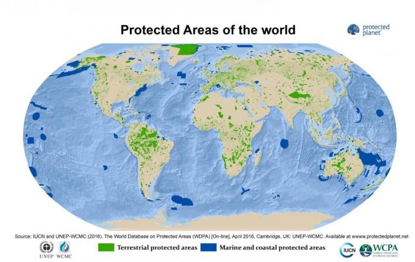

Websites about Protected Areas:
What are Protected Areas?
Protected areas, sometimes referred to as conservation areas, are areas of the globe guarded for their high amount of biodiversity. These areas are crucial when it comes to maintaining the environment and the vast resources within it. There are many protected areas accross the world and as such, they are recognized internationally.
The International Union for Conservation of Nature (IUCN) is responsible for managing and designating protected areas accross the globe. They have ranked every protected area into a category for their level of protection.
Class Ia: Strict Nature Reserve:
The highest category possible for a protected area. These areas have little to no human interference or activity within them. Strict Nature Reserves are filled with untouched land and is studied for a sustainable and evironmentally diverse future.
Class Ib: Wilderness area:
These are protected unmodified lands that have a minimal amount of human interaction. Unlike category Ia areas, they are usually much bigger, and have more human interactivity, like with Indigenous communities.
Class II: National Park:
Unlike categories Ia and Ib, these have a lot more human activity within them. They are often spots for educational and recreational activities to promote biodiversity in the area.
Class III: Natural Monument/Feature:
Unlike the previous categories, these areas are mainly designed to protect natural landmarks such as caves and landforms. They are much smaller compared to other protected areas, but they have a lot of tourist attraction.
Class IV: Habitat/Species Management Area:
Areas in the world that are being restored to their original state. They focus more on maintaining specific species and plants. They also undergo a high amount of management to ensure its protection and restoration to their old state.
Class V: Protected Landscape/ Seascape:
Protected areas which have had a lot of human interaction over the course of generations. Through the interaction, they have produced a unique landscape, which is protected for future generations, as well as the lands valuble reasorces
Class VI: Protected area with sustainable use of natural resources:
These areas have a high amount of sustainability. A hotspot for many habitats and ecosystems. While these areas are protected, the restrictions on them are not nearly as high as the rest, due to their sustainability.Related Issues and Strategies
- IUCN Website
- Wikipedia Page
- Protected Area Categories
- More on Class Ia areas
- View the World's Protected Areas
- History of the IUCN
Map of Protected Areas
{kind=link}
Return to Index Page
Return to top of the Page